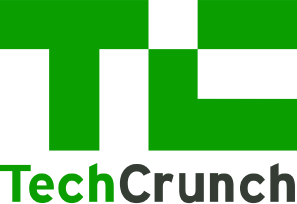
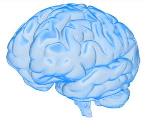
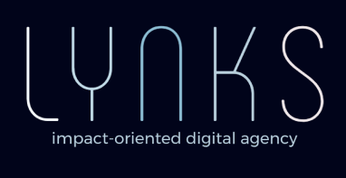

Detecting Depression Symptoms on Reddit
Python
NLP
Machine Learning
Reddit API
Developed a depression detection model in Python that classifies Reddit posts into symptom categories, achieving up to 97% accuracy with RoBERTa embeddings and 95% using LDA topic modeling.
Utilized 5-fold cross-validation to validate performance and ensure robust results.
Read Me
CS410 Course Website
HTML/CSS
JavaScript
UI/UX
Designed and developed the Minecraft-themed Introduction to AI (CS410) website at Brown University using HTML, CSS, and JavaScript,
serving 150 students. Created a playful, streamlined platform for lectures, assignments, and announcements that enhanced engagement and learning.
Visit Me

TechCrunch AI Web Scraper and Forecaster
Web Scraping
Python
Selenium
Data Analysis
Scraped 1,005 TechCrunch “Artificial Intelligence” articles using Selenium, Python, NumPy, and pandas to assess how VCs and technologists view AI's disruptive potential across 10 industries.
Using VADER sentiment analysis and linear regression, the results revealed strong optimism in media, healthcare, and enterprise, and heightened concern in government, finance, and social media.
Read Me

Multimodal Alzheimer's Disease Detection
Deep Learning
Neuroscience
Medical AI
Developed a multimodal deep learning pipeline to enable earlier, more accurate Alzheimer's Disease detection. Led the ADNI data request, managed genetic data preprocessing,
and co-led validation/testing for hyperparameter tuning to significantly boost diagnostic precision.
Read Me

Lynks Digital Agency
Web Development
React
UI/UX
Figma
Founded a 5-person web development agency after independently learning Figma, HTML/CSS, and React. Designed and delivered multi-page websites for five nonprofits,
providing end-to-end digital support—from concept and design to launch and ongoing maintenance.
Read Me